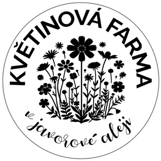
Květinová farma v Javorové alejikvetinovafarma.com ↗Brand photo and video for Sonnentor · Family farm, Pelhřimov
A farm, told through its people
Photos and short videos commissioned by Sonnentor, the Austrian organic tea and spice company, of one of its supplier farms: Květinová farma v Javorové aleji, a family flower and herb farm in Pelhřimov, in the Czech highlands. Hana Neckářová and her family started it eight years ago. Today they grow marigold, cornflower and sunflower petals for Sonnentor’s teas.

Published
My photos in Sonnentor’s magazine
The photos appeared in Sonnentor’s customer magazine, in an article about the farm. For a small farm, that is the kind of exposure that brings new customers.
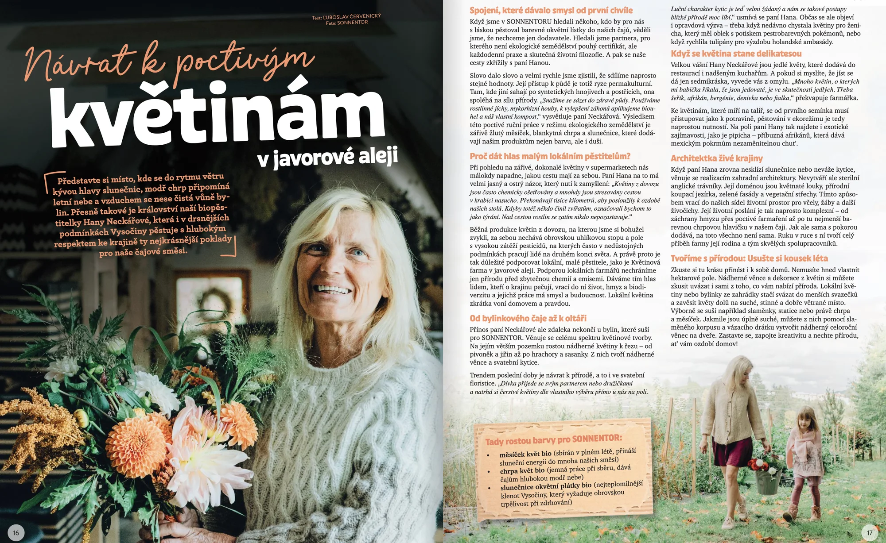
The client
Small farm, big range
They grow
Organic cut flowers, from peonies and dahlias to sweet peas and anemones, herbs for tea blends, edible flowers and microgreens.
They sell
Herbal teas, spices, syrups and herb salts in their online shop, wreaths and wedding bouquets, and seedlings at local markets. Brides can even pick their own flowers in the field.
They supply
Petals for Sonnentor’s teas, and edible flowers and microgreens for restaurants and chefs.
They design
Living gardens: flowering meadows, natural swimming ponds, green façades and green roofs that give space back to bees and other wildlife.
Best Organic Food of the Year 2026: the overall winner of the Czech competition was their microgreens.
The day
The season was over. The people weren’t.
By the time I arrived, the fields were past their season and the herbs had finished flowering. Instead of rows in bloom, the camera found something better: everyday life on the farm, how the family lives and works, and how much they love what they do and where they do it.
Hana showed me around: the herbs and flowers, the workshop full of drying bunches and wreaths, the animals and everything behind the scenes of a family farm.
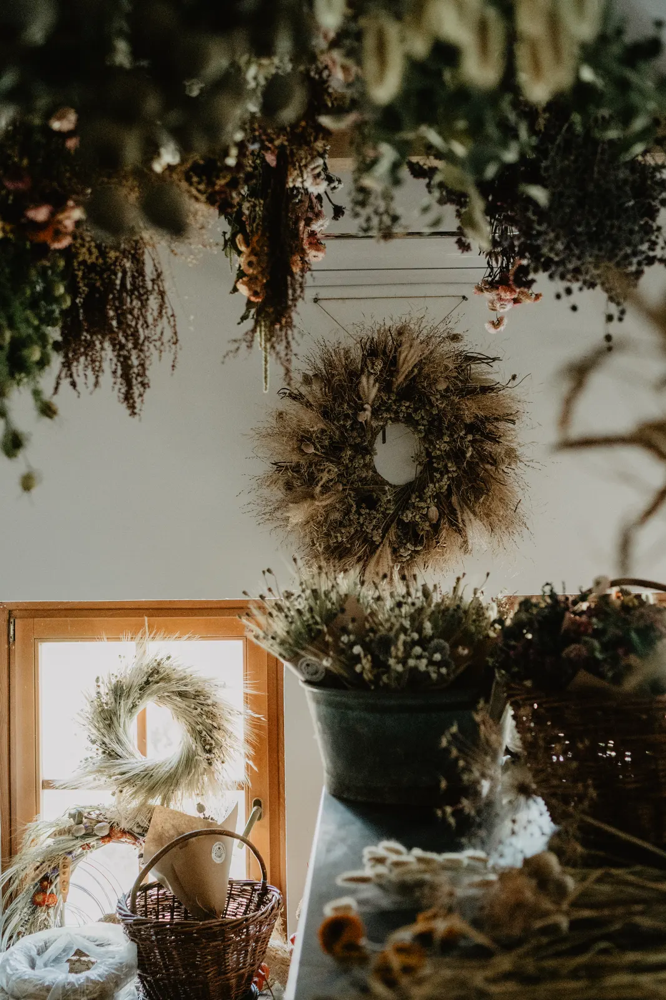
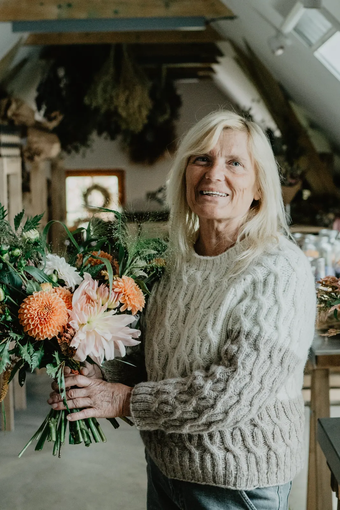
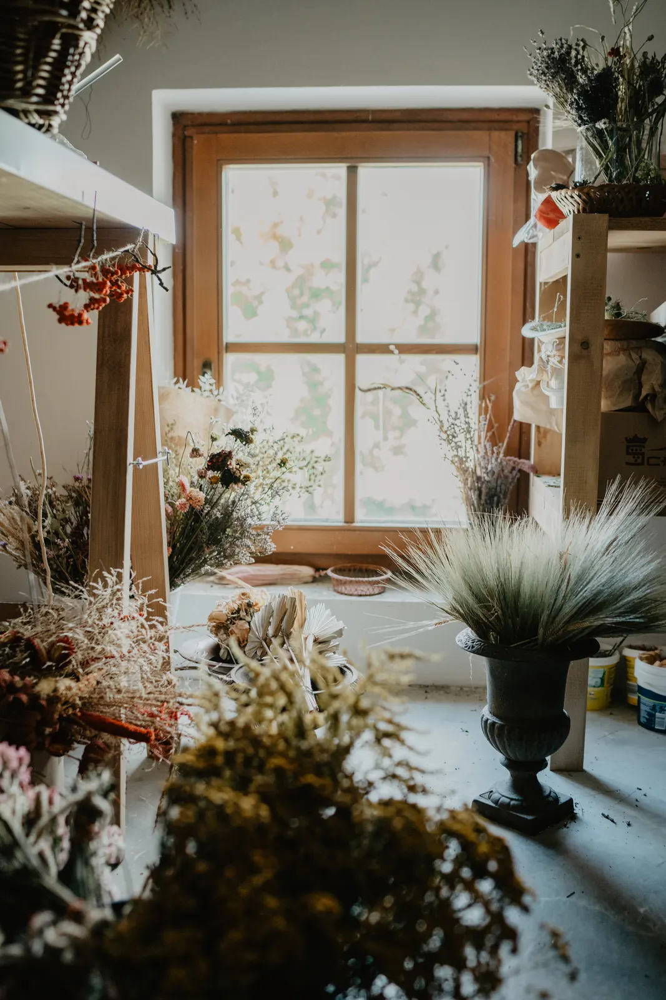
A small story
Tea that changes colour
Hana’s granddaughter joined the shoot, and together we made a little story with tea: we watched how its colour changes when you add the herbs and a slice of lemon. It became one of the short videos, and a simple way to show what the farm grows.
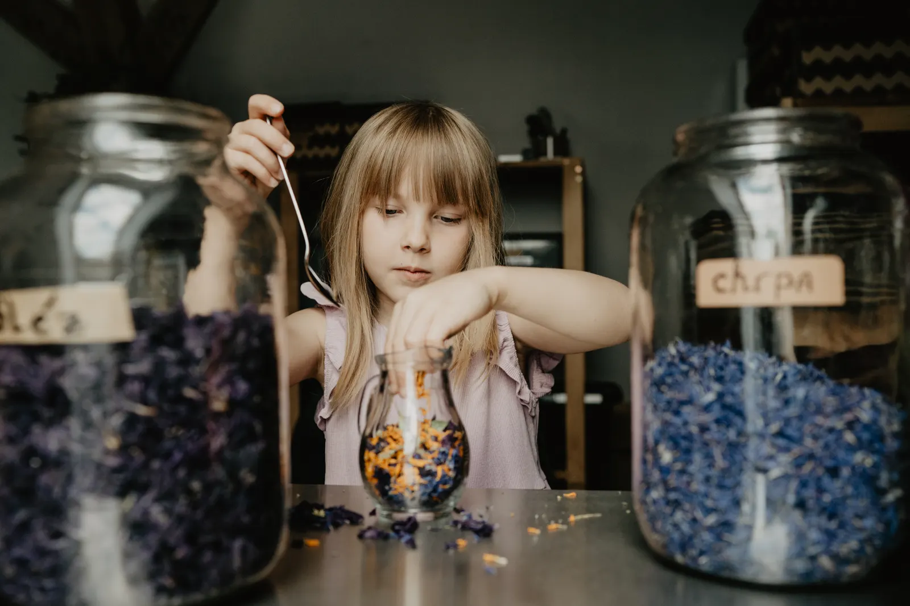
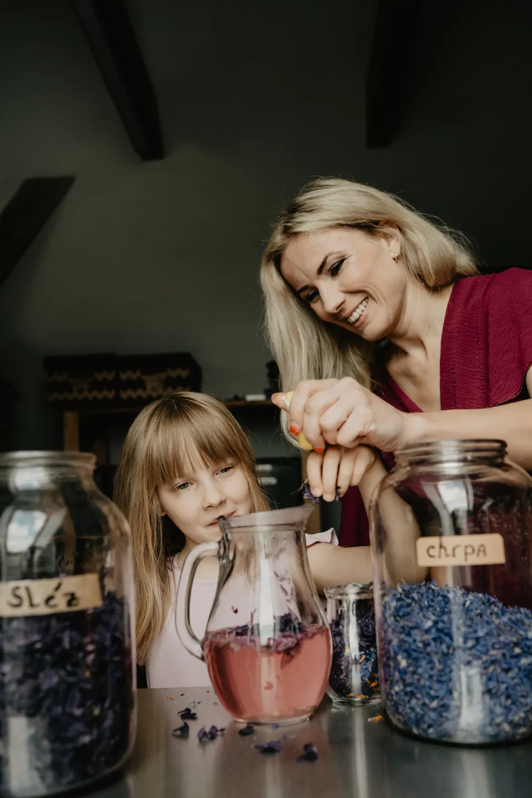
The team
Everyone has their place
The farm is family: Hana, her son, her daughter, and two women from Ukraine who joined at the start of the war and are now firmly part of the team. Listening to how warmly they talk about each other was the heart of the day.
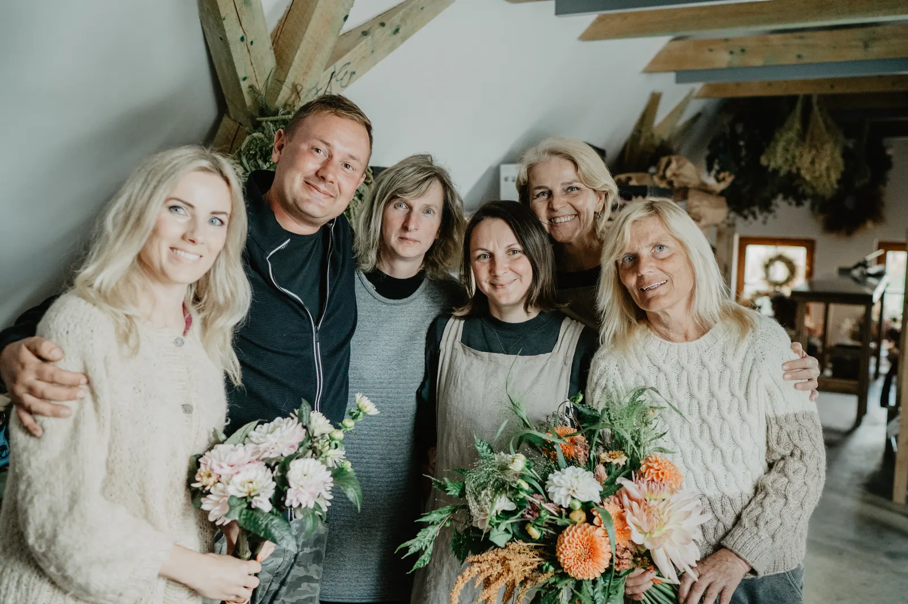
Everyone said they were glad the shoot let them stop for a moment and simply be together. On a normal day, each of them has their own work and they hardly see each other.
Life on the farm
Greenhouse, garden and furry friends
Sheep, hens, three dogs called Bak, Brixi and Barney, and a rescued rabbit who became a much-loved member of the family. They belong to the farm’s story as much as the herbs do.
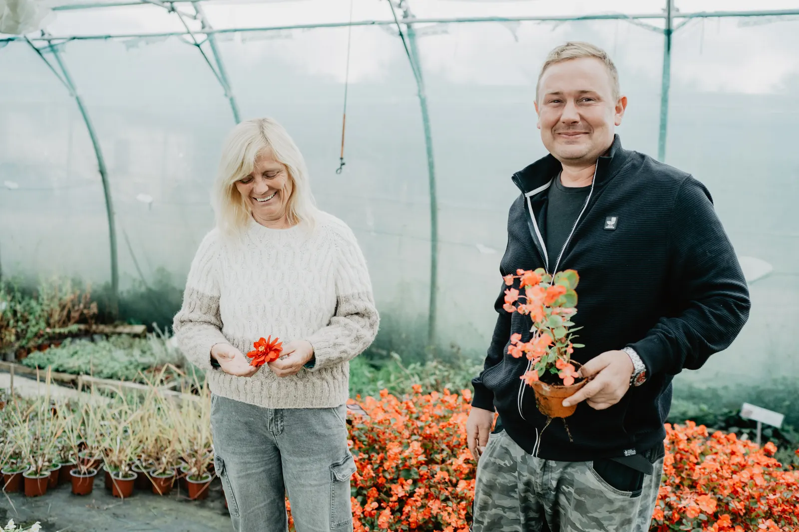
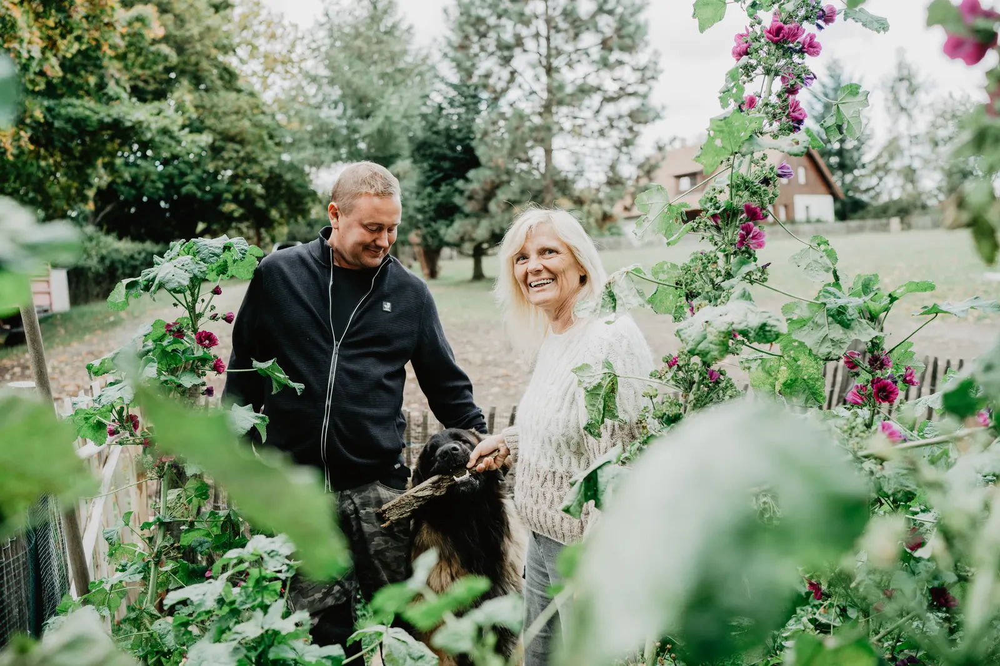
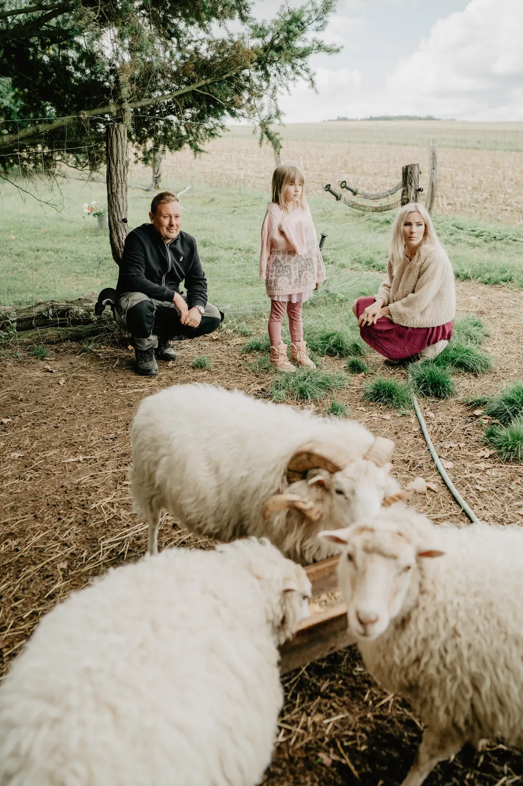
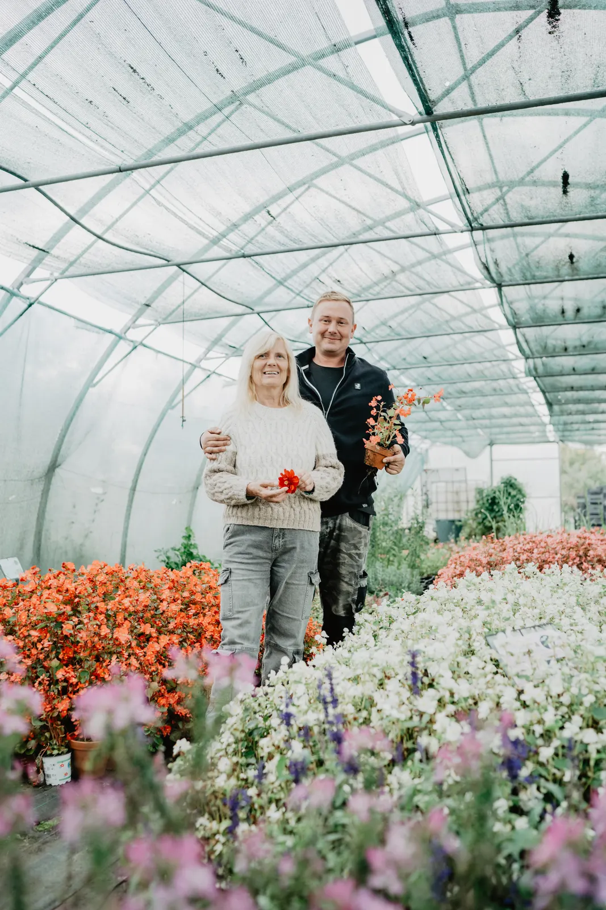
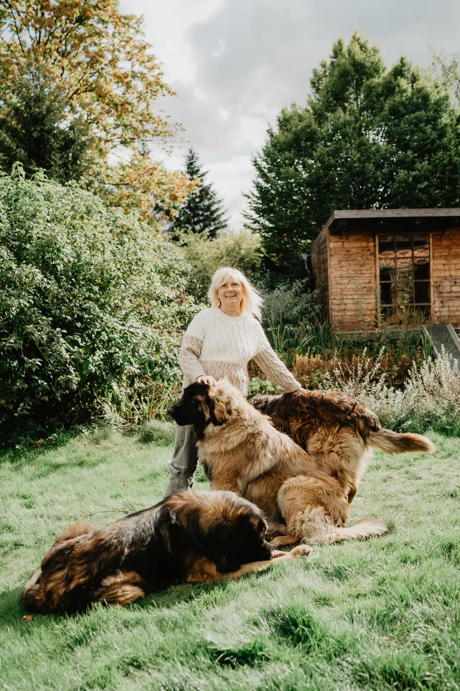
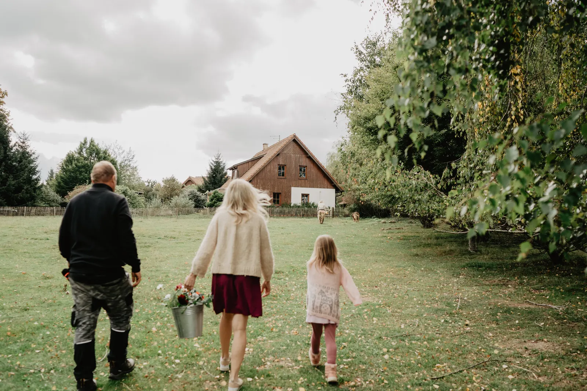
What this shows
Good brand photos start with people
A small business rarely needs perfect product shots first. It needs pictures that show who is behind it, so customers can trust the people before they buy the product. That’s what I bring to every brand shoot: a calm day, real moments, and photos and videos that show who you really are.